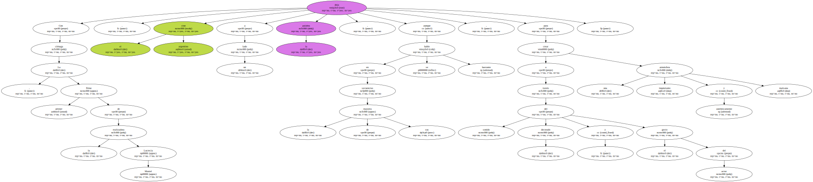
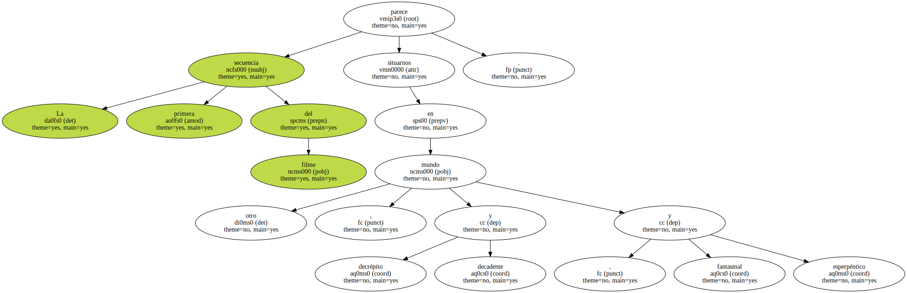
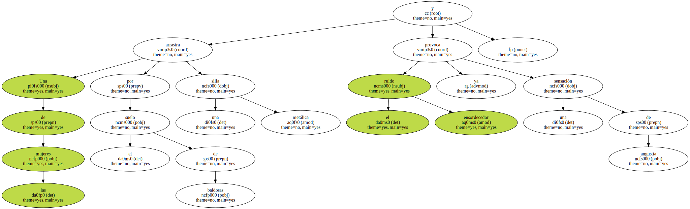
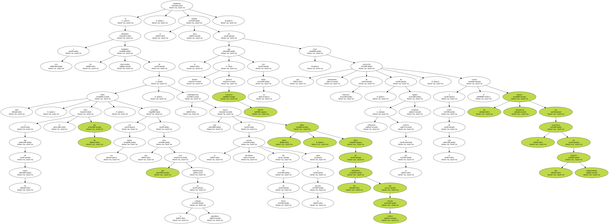

El cine argentino se asocia a una cierta locuacidad verbal o , en algunos casos , como el de Eliseo Subiela , a una forma muy personal de tratar los elementos propios del fantástico.
Con La ciénaga , primer filme de la realizadora Lucrecia Martel , el cine argentino deja a un lado la palabra , aunque en la mayoría de sus secuencias se hable bastante , para crear a través del sonido , el decorado y el gesto del actor una atmósfera auténticamente inquietante y malsana.
La primera secuencia del filme parece situarnos en otro mundo , decrépito y decadente , fantasmal y esperpéntico.
Una serie de hombres y mujeres de apariencia burguesa , demacrados y parapetados tras sus gafas de sol , consumen las últimas gotas de alcohol de una juerga nocturna junto a una especie de piscina cuyas aguas de color indeterminado invitan a cualquier cosa menos a un refrescante chapuzón.

Una de las mujeres arrastra por el suelo de baldosas una silla metálica y el ensordecedor ruido ya provoca una sensación de angustia.
Otra mujer tropieza y cae al suelo.

El espeso líquido del vino color sangre que consumen se derrama , una copa se rompe y la sangre de los cortes producidos con el cristal se confunde con el vino por el suelo.

Si a eso añadimos las imágenes intercaladas de unos niños , a uno de los cuales le falta un ojo , acosando con sus perros a una vaca que está inmovilizada en la ciénaga ponzoñosa , y la contemplación que de la decadente escena del fin de fiesta junto a la piscina hacen otras niñas , hijas de los anfitriones del festejo etílico , tendremos la medida justa de lo que intenta y provoca Lucrecia Martel con su debut : crear una sensación permanente de malestar , de enfermizo y a la vez realista agobio cotidiano , a través de la cual se cuelan los retazos dramáticos de la existencia de dos familias emparentadas.
Notable y original película , pues , que hace de los elementos físicos - - las torrenciales lluvias que caen de vez en cuando , la tierra reseca por el sol del caluroso verano en el norte de Argentina , la atmósfera pútrida de la ciénaga que rodea la casa , las referencias a la mandrágora como misteriosa planta sedante - - y de los gestos - - impagables las expresiones de todos los actores , algunos de los cuales deben interpretar personajes que parecen estar siempre en duermevela - - , materia de encomiable estilo.